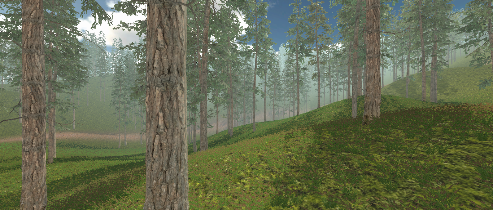

Happy Cube 3D
This project was my first ever Unity video game project. It was a great way for me to get familiar with Unity's basic components and explore what I can do with the engine.
This game consists of a cube that players must navigate through four levels (using 'Q' and 'D' keys). The goal is to reach a checkpoint without hitting any obstacles. The challenge increases as players progress through the levels, providing an opportunity for players to refine their skills and problem-solving abilities.
Overall, this project was a great starting point for me to get into game development with Unity. By focusing on basic components, it provided me with a solid foundation for building more complex games in the future.
January, 2023
Nature 3D
Nature 3D Unity video game project helped me showcase my exploration of the terrain features in Unity.
I created a forest map with average quality graphics and first-person camera view and movements which allows players to fully immerse
themselves in the game world and experience the environment from a more personal perspective.
By focusing on the terrain, I have been able to experiment with different tools and techniques to create an interactive
and immersive game environment.
This experience served as a strong foundation for future projects as I continue to learn and refine my skills in Unity.
February, 2023

Pink Adventure 2D
This Unity project is a 2D platformer game that features a character called the "pink man" as the main protagonist.
The objective of the game is to guide the pink man through various levels by jumping, dodging obstacles, and collecting fruits to earn points.
The game is divided into different levels, each with a unique theme and layout.
The levels are designed in such a way that the pink man must reach checkpoints to progress further in the game. These checkpoints act as save points, so if the player dies, they can restart from the last checkpoint they reached rather than starting from the beginning of the level.
The pink man's movements are controlled by the player using the keys ('q','y','d') .
The game mechanics include running and jumping. There may also be obstacles such as spikes or saws that the player must avoid.
Overall, this project was a fun and engaging platformer game that requires the player to use skill and strategy to progress through the levels while collecting fruits and reaching checkpoints.
February, 2023